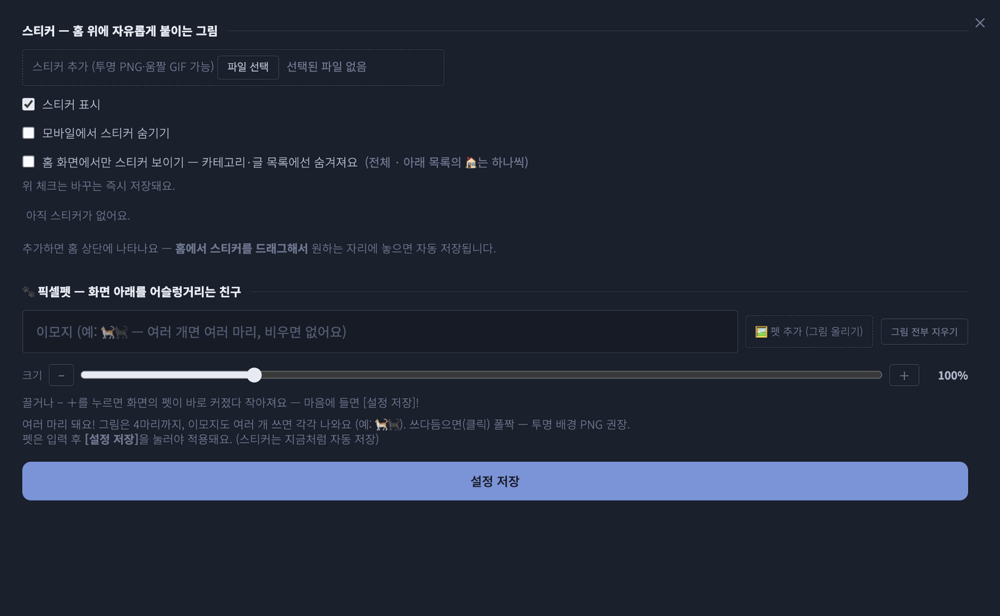

러브로그 · 꾸미기
배경과 스티커
- 배경 이미지+농도 조절. 농도를 맨 왼쪽(0)으로 두면 덮개 없이 배경색·사진 그대로 — 단색 배경을 정확한 색으로 쓸 때. 투명 PNG는 투명 그대로, 움짤 GIF도 그대로(8MB까지).
- 배경 HTML — 직접 짠 HTML·CSS를 홈 맨 뒤에 깔고 그 위에 위젯이 평소처럼 올라갑니다. 움직이는 별·격자·글리치 같은 배경을 CSS 애니메이션으로. 스크립트는 안 되고 클릭은 통과합니다(8,000자).
- 스티커는 ⠿ 편집 모드에서 드래그로 배치·크기·회전. PC와 모바일 위치가 따로 저장되고, 크기도 📱 슬라이더로 모바일만 따로.
- 겹침 순서는 목록의 ▲▼. 하나씩 [숨기기]/[▷ 보이기], 🏠를 켜면 그 스티커만 홈에서만.
- 탭 위쪽 체크(즉시 저장): 전체 표시 끄기 · 모바일만 숨기기 · 홈 화면에서만 보이기.
- 스티커는 페이지 아래쪽 어디든 놓을 수 있고, 글 읽는 동안엔 잠시 걷혀서 본문을 안 가립니다.

사진 자리img/ll-stickers.png스티커 그림자와 위치
- 스티커 목록의 〈🌑 그림자〉 버튼으로 스티커마다 아래 그림자를 켜고 끕니다. 배경이 투명한 그림이나 픽셀 그림은 끄는 쪽이 깔끔합니다.
- 위치는 PC와 폰에 따로 기억됩니다. 한쪽에서만 옮긴 스티커는 반대쪽에서도 같은 자리에서 시작하고, 그쪽에서 한 번 옮기면 그때부터 따로 기억됩니다.